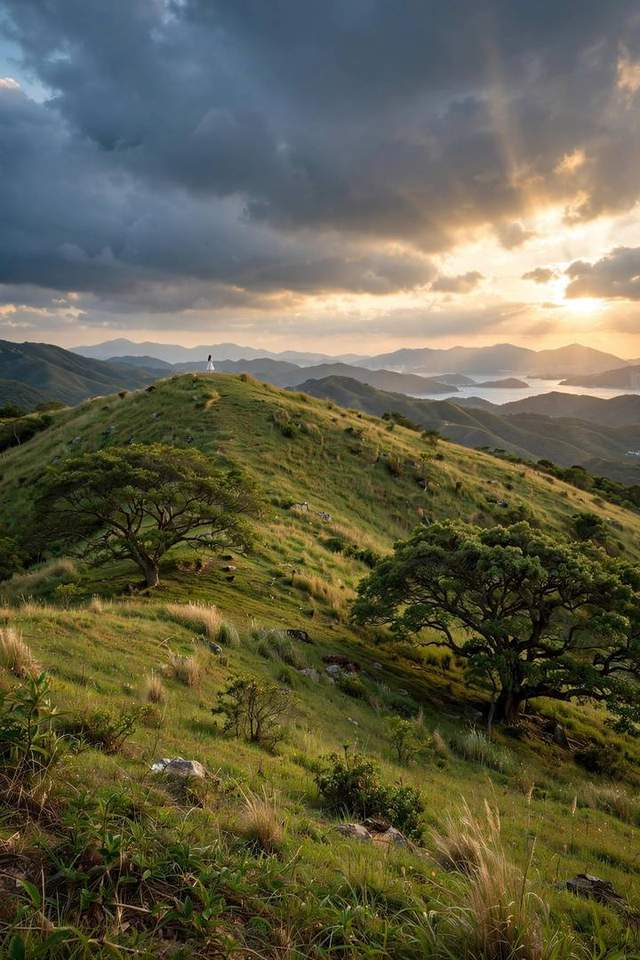
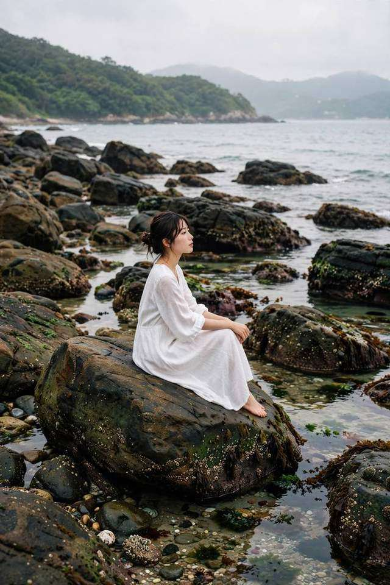

AI 概念图
按三个实地的真实样貌生成的目标图——"到了现场，就照着这个感觉拍"。点图可放大给模特看。
AI概念图 大坑墩 · 黄金时刻
① 草坡逆光剪影
16:30后太阳压低，让模特站在草坡上沿，背对/侧对太阳。风会替你做造型——等一阵风来再按快门。
拍法：75mm f/1.2，点测脸部 +0.5EV，Astia。注意10月初是绿草坡，不是芒草海。
AI概念图 大坑墩 · 巨树下

② 草丛低角度回头
滨田英明式机位：你蹲到草里仰拍，前景的草虚化成天然画框。模特戴草帽、回头——新手最不尴尬的pose。
拍法：75mm f/1.4，你蹲低 / 趴低。让模特先看远方，你喊"回头"再连拍。
AI概念图 大坑墩 · 大环境

③ 草原大环境
换上23mm，人只占画面一小块——"地方感"拉满。这种图和特写拼在一起，组图才有呼吸感（川内伦子式思路）。
拍法：23mm f/4–f/5.6，把人放在三分线上。云多的时候天空最有戏。
AI概念图 一滩 · 礁石区

④ 礁石静坐
一滩礁石区的标准答案：白裙坐礁石上，不看镜头。阴天来拍反而更好——云是天然柔光箱，岩石质感更沉。
拍法：75mm f/2，Pro Neg Std（阴天）/ Astia（晴天）。注意脚下湿滑，别让模特站太边缘。
AI概念图 二滩 · 热带沙滩

⑤ 踏浪行走
二滩招牌：细沙 + 绿山 + 白裙。让模特沿着浪线走，你横向跟拍连拍——走起来的裙摆比任何摆拍都自然。
拍法：23mm f/4 大场景；想虚化掉人群换75mm。白沙会骗测光，+0.7EV起步。
AI概念图 海滩 · 逆光特写

⑥ 逆光发丝特写
把太阳藏在模特脑后，发丝会透出光边。这是滨田英明最爱的光线语言——脸不需要亮，轮廓亮就够了。
拍法：75mm f/1.2，点测脸部 +0.3EV（脸允许稍暗）。傍晚或清晨才有这个角度。
👆 点任意图片可全屏放大，直接举给模特看